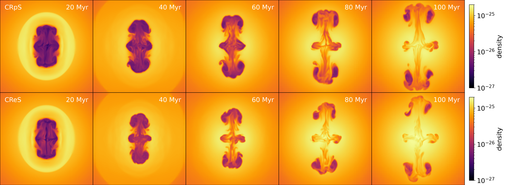
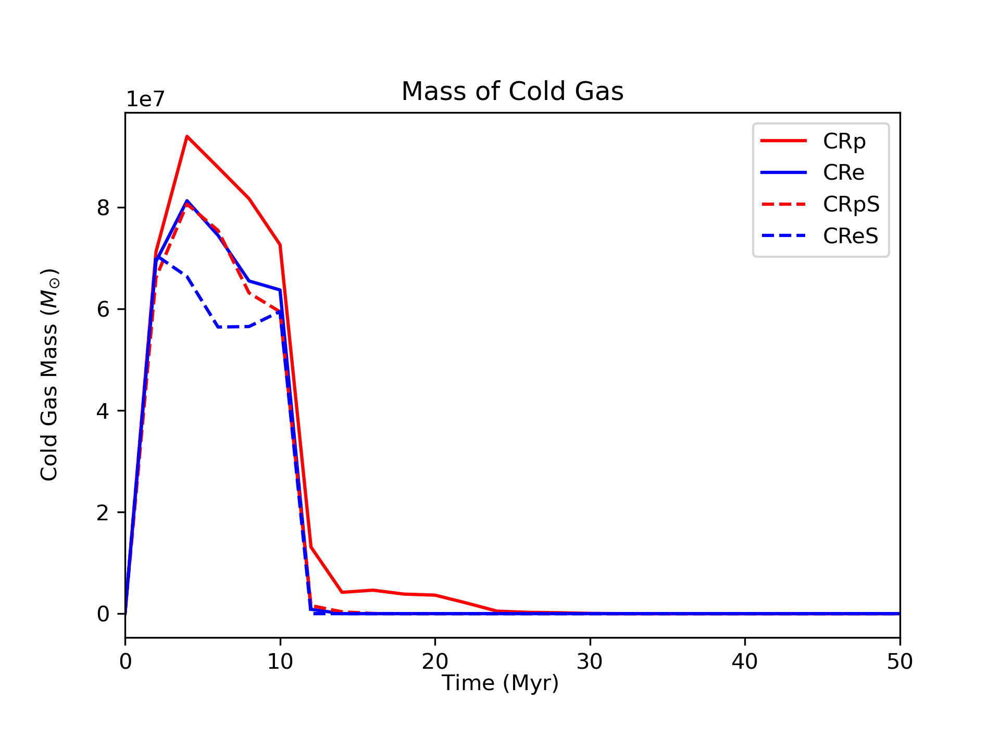
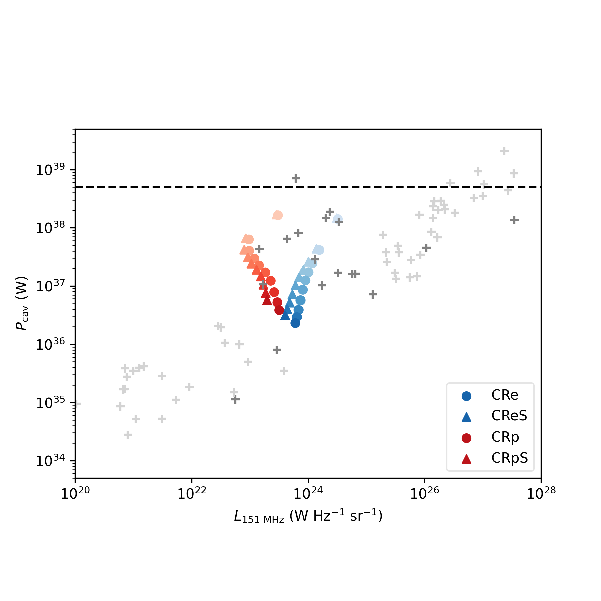

Evolution and feedback of AGN Jets of different Cosmic-ray Composition
Jet feedback from active galactic nuclei (AGN) is one of the most promising mechanisms for suppressing cooling flows in cool-core clusters. However, the composition of AGN jets and bubbles remains uncertain; they could be thermally dominated, or dominated by cosmic-ray proton (CRp), cosmic-ray electron (CRe), or magnetic energy.
In this work, we investigate the evolution and feedback effects of CRp and CRe dominated jets by conducting 3D magnetohydrodynamic simulations of AGN jet-inflated bubbles in the intracluster medium using the FLASH code. We present the evolution of their energies, dynamics and heating, and model their expected cavity-power versus radio-luminosity relation \((P_{\rm cav}-L_{\rm R})\).
We find that bubbles inflated by CRe dominated jets follow a very similar dynamical evolution to CRp dominated bubbles (shown below) even though CRe within bubbles suffer significantly stronger synchrotron and inverse-Compton cooling. This is because, as CRe lose their energy, the jet-inflated bubbles quickly become thermally dominated within ~ 30 Myr. Their total energy stops decreasing with CR energy and evolves similarly to CRp dominated bubbles.
Density slice of CRpS and CReS jets from 20 to 100 Myr. Despite CRe cools much more efficient than CRp, their dynamical evolution is actually very similar.
The ability of CRe and CRp dominated bubbles to heat the intracluster medium is also comparable; the cold gas formed via local thermal instabilities is well suppressed in both cases. The CRp and CRe bubbles follow different evolutionary trajectories on the \(P_{\rm cav}-L_{\rm R}\) plane, but the values are broadly consistent with observed ranges for FRI sources.
 The evolution of cold-gas mass in the simulations. CRp/CRpS simulations tend to create rougly 20% more cold gas. Including streaming heating can help suppress cold-gas formation by around 20%. Values after 50 Myr are zero in all simulations. \(P_{\rm cav}-L_{\rm R}\) diagram of our simulated bubbles over-plotted with observational data from Croston et al. (2018). The data points obtained from our simulations are plotted from t = 5 to 95 Myr with a time interval of 10 Myr (where lighter colors represents earlier simulation times). We mark the observational data from Bîrzan et al. (2008) using dark gray crosses while other data (from Cavagnolo et al. 2010; O'Sullivan et al. 2011; Ineson et al. 2017) is plotted with light gray crosses. The dashed horizontal line represents the injected power of simulated AGN jets \((5 \times 10^{45} ~{\rm erg~s^{-1}})\).
We also discuss observational techniques that have potential for constraining the composition of AGN jets and bubbles.
This work is accepted for publication in MNRAS (2023.01.16).